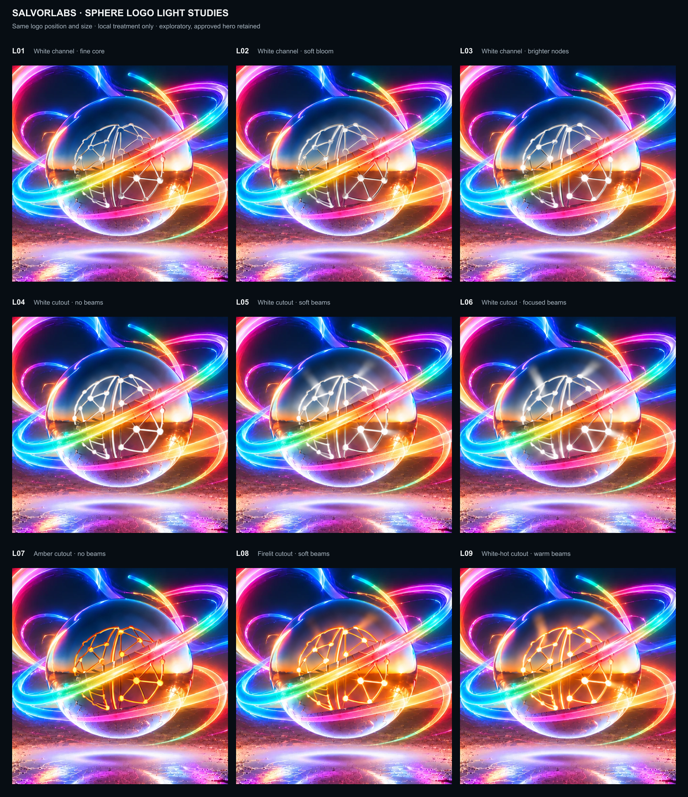

Logo illumination · exploration 01
Same crop, logo placement and scale. L01–L03: white imprint channels. L04–L06: white cutouts. L07–L09: warm cutouts. This is an exploratory sheet; the locked hero and sharing cards remain in place.

Same crop, logo placement and scale. L01–L03: white imprint channels. L04–L06: white cutouts. L07–L09: warm cutouts. This is an exploratory sheet; the locked hero and sharing cards remain in place.
